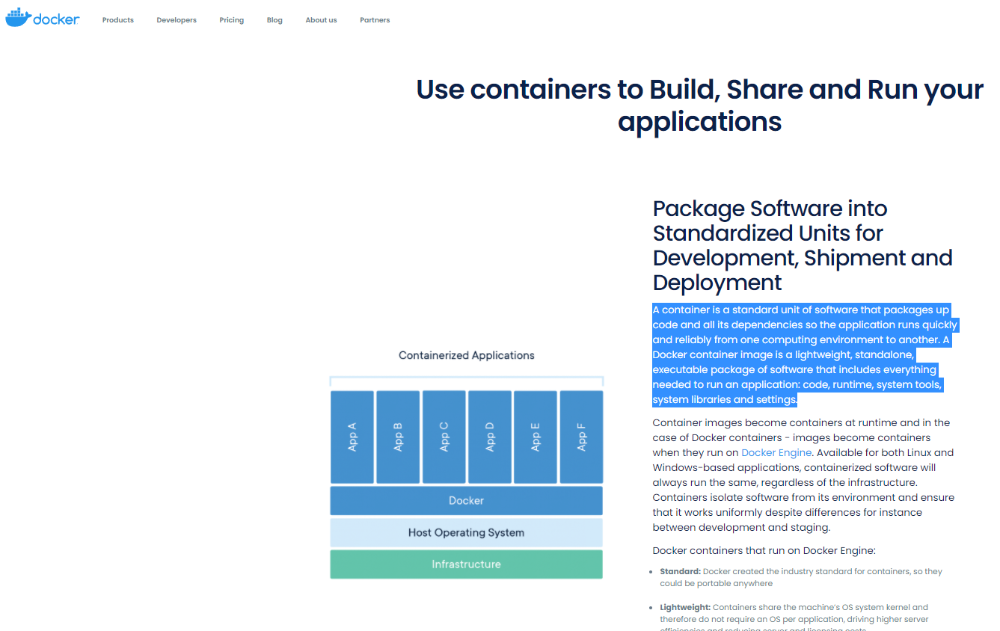
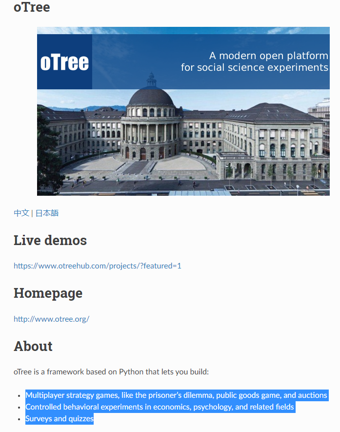
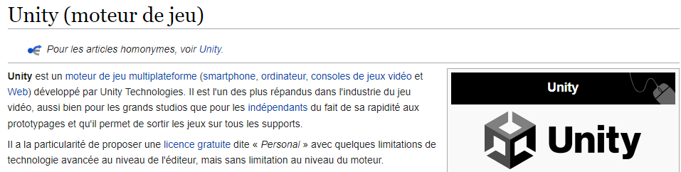
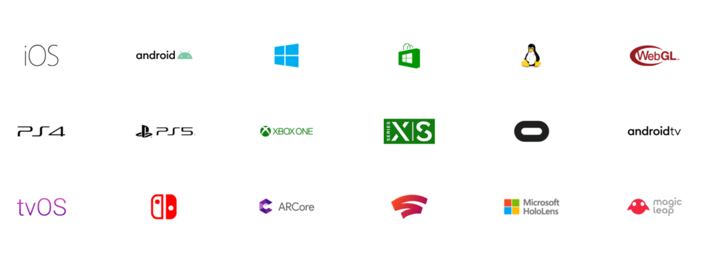
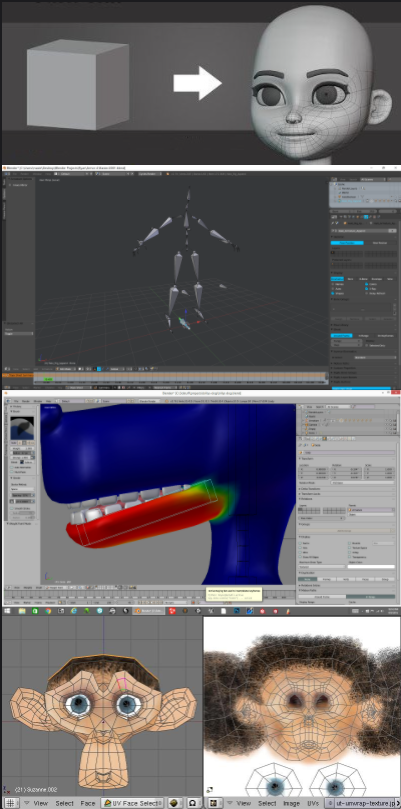
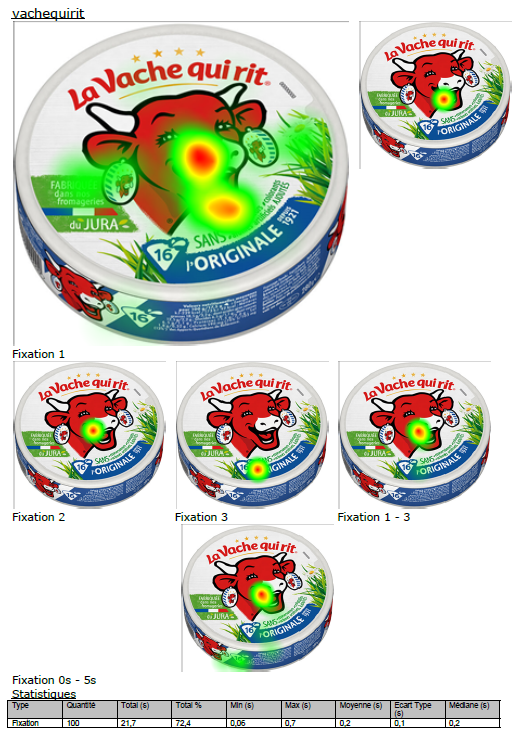
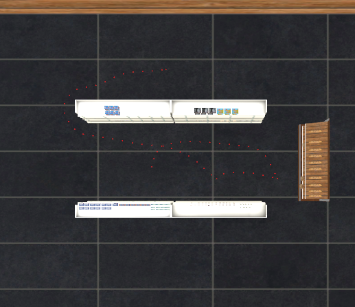

Différentes applications possibles en accord avec votre protocole
Environnement
passation
Bureautique et/ou Smartphone
Casques
Possibilité n°
1
2
3
4
Navigateur
App 2D/3D
Internet
+ App 2D/3D
Réalité virtuelle
Exemples détaillés
Possibilité n°1 : Passation d'une expérience via Internet (sur navigateur) sur bureau ou smartphone
Résumé :
- accès depuis internet peut importe l'outil (pc, tablette, smartphone)
- accès administrateur pour observer la passation
- nombre de passations simultanées très nombreuses, possibilité de maitriser les participants
- possible expérimentation en éco expérimentale (interaction entre participant)
- plusieurs types de données récoltées (choix subjectifs et données comportementales)
- enregistrement données dans base de données et export CSV
Possibilité n°2 : Passation d'une expérience en local
Résumé :
- En local (sans internet)
- Variété d'interaction et de possibilités de captation (UserLab)
- 1 personne par capteur
- possible expérimentation a plusieurs sur réseau local dans une même application
- enregistrement données automatique images, CSV, etc
Possibilité n°3 : Hybride (Internet + App 2D/3D)
Résumé :
- internet
- combine interêt passation distance avec des contenus plus graphique (possibilités)
- enregistrement données automatique images, CSV sur serveur avec nommage fichiers
Possibilité n°4 : Realité virtuelle
Résumé :
- local !
- Plusieurs casques/possibilités (données physios, eyetracker, données comportementales)
- enregistrement données automatique images, vidéos, CSV sur le casque ou sur PC (cas filaire)
Points technologiques et implications
Les expériences en lignes necessitent :
- le developpement de votre application par le UserLab
- la programmation utilisée : python, et web (html, css, javascript, php)
- sa containarisation et son deploiement dans le serveur du UserLab (bientôt disponible)
- option (éco expérimentale): pour expérimentations à participantS et/ou si vous souhaitez surveiller les sessions cela necessite la mise en place d'Otree.


Les expériences en 2D/3D et réalité virtuelle necessitent :
- le developpement de votre application par le UserLab
- la programmation utilisée : C#, et web en option (php)
- la conception d'objet 3D avec Blender
- l'implémentation dans Unity3D (un moteur de rendu 3D) et son déploiement sur une plateforme (web, bureau, casque de RV)



Données pouvant être récupérées
Navigateur
App 2D/3D
Internet
+ App 2D/3D
Réalité virtuelle
Enregistrement écran
V
sauf internet
V
sauf internet
V
V
Cinétique membres
X
sans capteurs
X
sans capteurs
X
sans capteurs
V
Cinétique curser
V
V
V
X
Position Regard
X
sauf internet
X
sauf internet
V
V
Regard Objet regardé
X
X
V
V
Interactions*
V
V
V
V
Evenements*
V
V
V
V
*Interaction : boutons, champ texte, ascenseur, survol d'une image avec souris, cliquer sur un objet, interagir avec un personnage, etc.
*Evenements : temps sur une page, dans un espace, nombre de clic, temps de réponse, n'importe quel feedback de l'application...
Représentation des données
Brutes
Fichier txt/csv
"Post traitement"
Graphiques
 - position plusieurs objets (3D)
- position plusieurs objets (3D)
 - proxémie (2D vecteur sur un axe au cours du temps)
- proxémie (2D vecteur sur un axe au cours du temps)
Images
Peuvent représenter des dynamiques au cours du temps
Carte chaleur (eyetracking)
Chemin déplacement dans un monde
Vidéo
Position du regard (barre)
Position du regard (VR)
3D Timeline sur Python 3D
"Inférées"
A vous de voir !